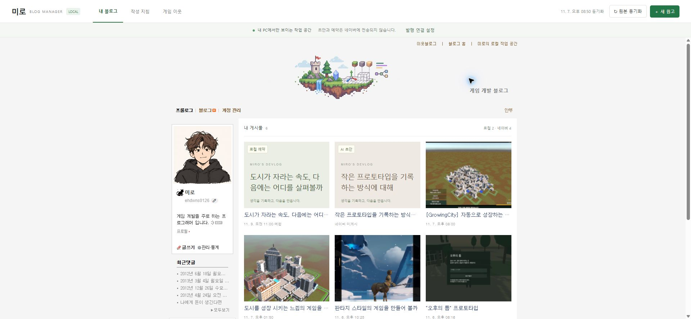
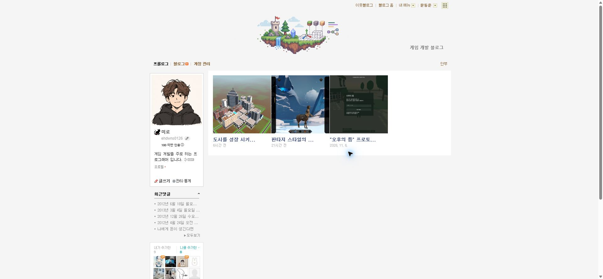
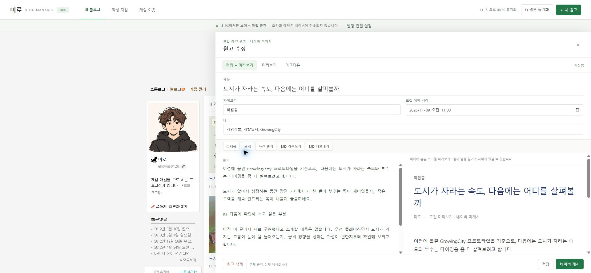
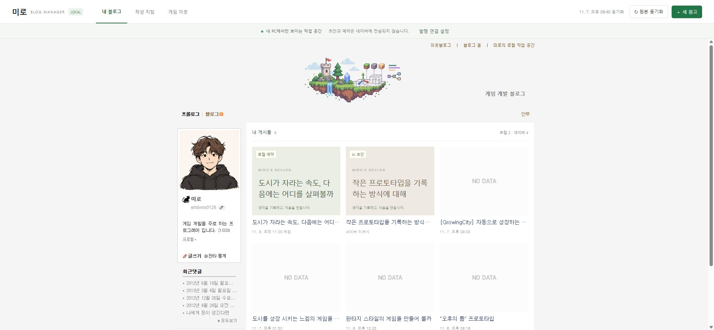
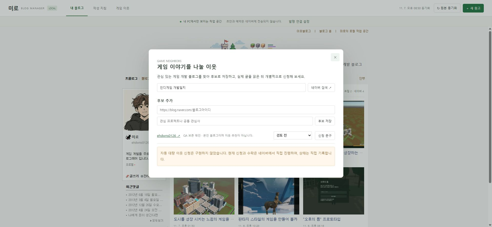

Tracefolio REPORTS & ISSUES
Tracefolio REPORTS & ISSUES미미로 블로그 매니저작업 결과
실제 네이버 디자인을 가져오는 로컬 블로그 관리자
검증 대기로컬 초안·예약·미리보기·파일 저장과 최신 실제 글 기반 지침 갱신을 구현했습니다. 실제 네이버 발행은 연결 검증 중입니다.
작업 결과
원본 배너·프로필·메뉴·이웃 위젯과 공개 글을 가져온 로컬 작업 공간에서 AI 원고와 로컬 예약을 실제 게시글보다 앞에 표시합니다. 본문 수정·사진·파일 저장·재열기와 최신 글 기반 문체 갱신을 확인했습니다. 네이버 실제 발행 연결은 아직 검증 중이며 전체 완료로 보고하지 않습니다.

변경 내용
적용 내용
- 실제 공개 프롤로그 HTML·CSS와 게시글 4개 본문을 동기화합니다. 첨부 화면 이후 게시된 GrowingCity 글까지 포함했습니다.
- 로컬 AI 원고 2개, 로컬 예약, 제목·본문·태그·카테고리 수정, 마크다운 가져오기·내보내기, 사진 원본 보존, 자동 저장과 수정·삭제 전 백업을 구현했습니다.
- 최신 실제 글 최대 10개의 표현·문단 통계와 원문 근거로 문체 지침을 다시 만들며, 동일 규칙 ID를 누적하지 않습니다. 추가 지침은 공백·문장 부호만 다른 중복을 통합합니다. 의미가 비슷한 다른 문장을 AI가 자동 삭제하는 기능은 아닙니다.
- 디자인과 초안 데이터를 분리했습니다. 원본 디자인을 갱신해도 초안·예약을 유지합니다. 동적 위젯 갱신은 확장 연결이 필요하며 연결 전에는 실제 최초 캡처를 사용합니다.
- 게임 분야 이웃 검색·후보·메모·개별 신청 문구를 제공합니다. 자동 이웃 신청은 구현하지 않았고 상태는 직접 기록합니다.
- 확장 프로그램의 네이버 입력·최종 확인 후 발행 코드를 구현했습니다. 실제 발행 설정의 버튼·공개 범위·태그 필드를 직접 확인했습니다.

새 프로젝트이므로 이전 로컬 프로그램 화면은 없습니다. 위 이미지는 수정 전 로컬 프로그램이 아니라 사용자가 지정한 실제 블로그의 참조 화면입니다.

검증
- 실제 공개 RSS 4개 글의 본문 추출과 최신 순서를 확인했습니다. 원본 배너·프로필·메뉴·기존 이미지·이웃 위젯을 실제 화면과 대조했습니다.
- 실제 브라우저에서 테스트 원고 작성 → 수정 → 저장 → 새로고침 → 재열기 후 본문 보존을 확인했습니다. 이미지 업로드 후 원고 문법·목록 썸네일·미리보기 이미지 naturalWidth 365를 확인했습니다.
- 이웃 후보 저장·닫기·재열기 후 메모와 상태 보존을 확인하고 QA 후보를 백업 후 삭제했습니다.
- node --test tests/core.test.mjs tests/http.test.mjs tests/extension.test.mjs: 13개 통과. 확장 보안 테스트는 대역을 사용하며 실제 Chrome 발행 성공을 뜻하지 않습니다.
- 네이버 실제 편집기에서 제목·서식 있는 본문 입력과 공개 설정 화면을 확인했습니다. HTML data URL 이미지는 입력되지 않았습니다(se-image 0개). 정식 사진 업로드 코드로 수정했으나 실제 실행은 아직 검증하지 않았습니다.
- 원본 img src 대신 onerror 대체 주소를 잡던 문제를 수정하고 회귀 테스트를 추가했습니다. debugger는 선택 권한으로 지원되지 않는다는 공식 문서를 확인해 필수 권한으로 수정했습니다.


남은 사항
- 확장 프로그램 설치·권한 허용·0.1.1 갱신 완료는 사용자 응답으로 확인했지만, 현재 관리자 문서에는 확장 스크립트 주입 표시와 연결 응답이 없습니다. 정확한 팝업 상태 확인을 요청한 상태입니다. 원인은 미확인입니다.
- 브라우저 보안 정책이 chrome://extensions 접근을 차단하고 우회를 금지해 AI가 설치 화면을 대신 조작할 수 없었습니다. 사용자에게 직접 설치를 요청했습니다.
- 실제 네이버 사진 업로드, 최종 발행과 공개 결과 URL·본문 검증은 미완료입니다. 테스트 글을 공개 발행하지 않았습니다. 로컬 예약은 실제 네이버 예약이 아닙니다.
- RSS에 없는 전체 과거 글·비공개 글을 가져왔다고 주장하지 않습니다. 원본 네이버 스크립트는 로컬 미러에서 실행하지 않으므로 모든 네이버 상호작용이 복제되는 것은 아닙니다.
- 앱 자체의 자동 AI 생성 API는 연결하지 않았습니다. 기본 원고는 실제 AI가 작성했으며 이후 AI 작성 요청문·MD 가져오기 또는 프로젝트에서 AI에게 직접 원고 작성을 요청하는 흐름을 제공합니다.
- 보고용 화면은 실제 프로그램 캡처 원본입니다. Affinity CLI doctor/status가 ECONNREFUSED라 이미지 재편집·GIF 제작을 하지 않았습니다. 캡처가 200KB 미만이므로 다른 이미지 도구로 가공하지 않았습니다.
- 교훈 검토: 전역 변경 없음. 기존 공식 기능 확인·실제 실행 검증 의무를 유지하고, Chrome 권한 제한과 업로드 검증 근거는 프로젝트 문서와 테스트에 기록했습니다.
- 로컬 원고는 파일에 저장되며 작업용 테스트 글·후보는 백업 후 정리했습니다. 서버·관리자 탭은 사용자 확인용으로 유지 중입니다.
작업 시간
- 제안 시간: 초기 구현·로컬 검증 25
45분. 실제 발행 연결은 로그인된 편집기에서 별도 검증. 추가 예상 1020분(이미지 파일 선택 도구 호출 반환에 23분 지연 확인 후 안내). - 실제로 완료된 시간: 시작: 2026-11-07 20:03:59 Asia/Seoul. 기록 시각: 2026-11-07 21:00:09 Asia/Seoul. 56분 경과. 전체 작업은 진행 중이며 완료 시각은 없습니다.
- XERJ: 미사용 — XERJ 연결 도구가 제공되지 않아 rg·현재 소스·실제 DOM·실행 결과로 확인했습니다.